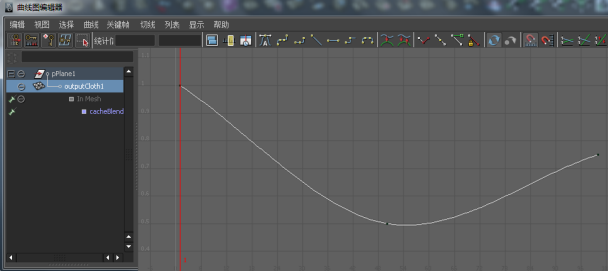

融合 nCache 片段
可以融合 nCache 片段，创建对象重叠缓存片段之间的平滑、无缝过渡。
nHair 缓存不完全支持融合 nCache 片段
nCache 片段自动融合。默认情况下，所有已启用 nCache 片段的重叠区域将使用其缓存片段的当前权重设置自动融合在一起。请参见输入权重。
nCache 权重将在重叠缓存片段之间归一化。因此，如果两个重叠缓存片段具有相同权重值（即 1.0 和 1.0、0.5 和 0.5，依此类推），则在播放过程中它们对缓存融合区域中的模拟将做出相同贡献。
可以调整缓存片段融合的平滑度，方法是调整其权重设置，或操纵其权重曲线。例如，有两个重叠缓存片段，一个来自帧 0-200，另一个来自帧 100-300，并且两个片段的“输入权重”(Input Weights)都已设定为 0.5 (50%)，则在播放过程中这两个片段将对其对象在帧 100-200 处的变形做出相同贡献。
顺序缓存片段不会融合。如果 nCache 片段之间存在间隙，这些间隙中将填充对象原始（源）模拟的实时播放，而非插值的缓存数据。
创建和调整 nCache 片段权重曲线
可以为 nCache 片段创建权重曲线。这些权重曲线可用于调整 nCache 片段的模拟缓入和缓出片段融合区域的方式。
创建和调整 nCache 片段权重曲线
- 在场景视图中，选择要创建和调整其缓存片段权重曲线的对象。
- 在“Trax 编辑器”(Trax Editor)中，选择“列表 > 加载选定角色”(List > Load Selected Characters)。
所有当前对象的缓存都将在轨迹视图中显示为片段。
- 选择要创建和调整其权重曲线的 nCache 片段。
- 在缓存片段上单击鼠标右键，然后从显示的上下文相关菜单中选择“创建权重曲线”(Create Weight Curve)。
系统将为选定的缓存片段创建权重曲线。
- 执行下列操作之一：
- 在 Trax 工具栏中，单击“图形权重曲线”(Graph Weight Curves)按钮 ()。
- 在选定的缓存片段上单击鼠标右键，然后从显示的上下文相关菜单中选择“对权重制图”(Graph Weight)。
“曲线图编辑器”(Graph Editor)将打开，选定的缓存片段权重曲线将在其图形视图中处于框显状态。
 - 通过执行以下操作，调整缓存片段权重曲线的形状：
- 移动权重曲线的关键帧或关键帧切线。
从 Maya 工具箱中选择“移动工具”(Move Tool)，然后使用鼠标中键拖动关键帧或关键帧切线控制柄，可更改权重曲线的形状。
- （可选）将新关键帧添加到权重曲线。
从“曲线图编辑器”(Graph Editor)的工具栏中选择“插入关键帧工具”(Insert Keys Tool) ()，然后使用鼠标中键单击权重曲线，可将其他关键帧添加到权重曲线。
然后可以使用这些新的关键帧及其切线控制柄，进一步操纵权重曲线的形状。
修改后的权重曲线现在显示在轨迹视图区域的选定 nCache 片段上。
提示：在“属性编辑器”(Attribute Editor)中，也可以为对象缓存 cacheBlend 选项卡上的“输入权重”(Input Weight)属性设置关键帧，从而为对象创建 nCache 权重曲线。
从“属性编辑器”(Attribute Editor)融合和设定 nCache 权重
融合 nCache 并设定其权重
如果一个对象附着有多个 nCache，则系统将自动创建 cacheBlend 节点以定义和管理对象多个 nCache 的权重。请参见 cacheBlend 节点。
nCache 在时间上重叠时，其重叠的缓存区域将使用其 cacheBlend 节点上缓存的当前“输入权重”(Input Weight)值融合在一起。
此外，缓存权重在两个重叠的缓存之间进行归一化。因此，如果两个重叠缓存具有相同权重值（即 1.0 和 1.0、0.5 和 0.5，等等），则在播放过程中它们对缓存融合区域中的模拟将做出相同贡献。
融合 nCaches 并设定其权重
- 选择要调整其缓存权重的对象。
- 在“属性编辑器”(Attribute Editor)中，选择“cacheBlend”选项卡。
- 在“输入权重”(Input Weights)区域，通过拖动各自滑块或在权重字段输入值，调整每个对象缓存的权重值，
当 nCache 的权重为 1.0 时，它将与当前对象的其他缓存融合并将在播放过程中对对象的布料效果做出完全贡献。
当 nCache 的权重为 0.0 时，它将不会与当前对象的其他缓存融合并且不会在播放过程中对对象的布料效果做出贡献。
- （可选）对 nCache 权重设置动画，增加或降低其对融合后时间过程中布料效果的贡献。
调整每个缓存的权重值后，在其权重属性上单击鼠标右键并从显示的上下文相关菜单中选择“为选定项设置关键帧”(Key Selected)。
这样会将关键帧添加到 nCache，创建权重曲线。然后，可以操纵这些权重曲线，平滑对象重叠（融合）缓存之间的过渡。
绘制 nCloth 缓存权重
可以通过直接在曲面上绘制 nCloth 对象的缓存权重，在单个 nCloth 对象上交互式应用、分发和融合多个缓存的权重。这样允许您以艺术方式指示和操纵 nCloth 的权重。例如，使用“绘制缓存权重工具”(Paint Cache Weights Tool)可以在 nCloth 护套的袖子上绘制一个缓存，在 nCloth 护套的主体上绘制另一个缓存，然后在护套的肩部融合这两个缓存，创建从袖子 nCloth 缓存到护套 nCloth 缓存主体的平滑过渡。
绘制 nCloth 缓存权重
- 选择要绘制其缓存权重值的 nCloth 对象。
- 在 FX 菜单集中，选择
 。
。
“绘制缓存权重工具”(Paint Cache Weights Tool)设置将显示在“工具设置”(Tool Settings)窗口中。
- 在“工具设置”(Tool Settings)窗口中，从“缓存”(Cache)列表选择要为其绘制权重的 nCloth 缓存。
- 选择一种“绘制”(Paint)操作，然后调整工具笔刷的“值”(Value)和“不透明度”(Opacity)。
有关这些工具设置的说明，请参见 Artisan 工具设置。
- （可选）在工具设置的“属性贴图”(Attribute Maps)区域中，为要将其权重绘制到对象上的 nCloth 缓存导入现有 nCloth 缓存权重贴图。请参见“属性贴图”区域。
- 在场景视图中，沿 nCloth 对象曲面拖动“绘制缓存权重工具”(Paint Cache Weights Tool)，逐顶点更改其缓存权重。
注： 绘制的 nCloth 缓存权重将归一化。这意味着，如果任何 nCloth 缓存具有相同的绘制权重值（例如，1.0 和 1.0、0.5 和 0.5，等等），则在播放过程中这些缓存对它们 nCloth 对象的模拟将做出相同贡献。